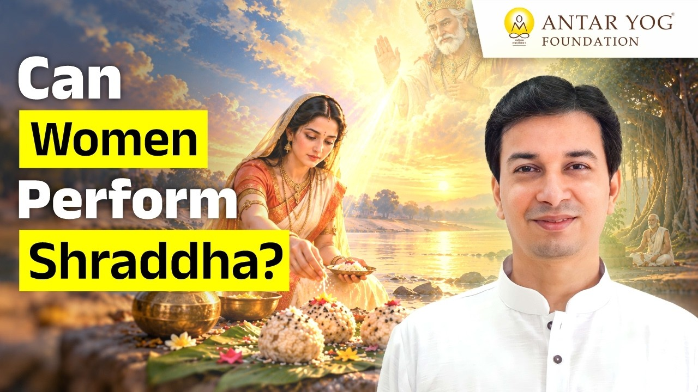

पितृ पक्ष आते ही कई प्रश्न मन में उठते हैं। पितर कौन हैं? श्राद्ध और तर्पण (पूर्वजों को जल और अन्न अर्पण) का वास्तविक अर्थ क्या है?
इन्हीं में एक प्रश्न बहुत चर्चित है: क्या स्त्रियों को भी श्राद्ध और तर्पण करने का अधिकार है? ब्रह्मर्षि आचार्य उपेंद्र जी इसका उत्तर शास्त्रों, इतिहास और प्रत्यक्ष अनुभव, तीनों के आधार पर देते हैं।
उत्तर स्पष्ट है: हाँ
आचार्य जी कहते हैं कि स्त्रियाँ बिल्कुल श्राद्ध कर सकती हैं। यह अधिकार किसी ने बाद में नहीं दिया, शास्त्रों ने ही उन्हें दिया है।
गरुड़ पुराण हो या विष्णु पुराण, जहाँ भी श्राद्ध की बात आई है, कहीं भी स्त्रियों पर ऐसी पाबंदी नहीं लिखी कि उन्हें श्राद्ध नहीं करना है। आचार्य जी कहते हैं कि स्त्रियों को जरूर अधिकार है, और यह अधिकार शास्त्रों ने ही उन्हें दिया है।
तो फिर हर स्त्री के लिए अनिवार्य क्यों नहीं?
यहाँ एक सूक्ष्म बात है। शास्त्रों ने सहमति दी है, पर आग्रह नहीं किया। कोई शास्त्र यह नहीं कहता कि प्रत्येक स्त्री को श्राद्ध करना ही चाहिए।
इसका कारण स्त्री का भावुक स्वभाव है। अगर श्राद्ध के समय उसके भीतर श्मशान वैराग्य (मृत्यु को निकट से देखकर उठने वाली विरक्ति) जाग जाए, तो घर में कठिनाई हो सकती है, जहाँ छोटे बच्चे और परिवार उस पर निर्भर हैं।
इसलिए जो स्त्रियाँ आध्यात्मिक रूप से ऊँचे स्तर पर हैं और मानसिक रूप से दृढ़ हैं, उनसे स्पष्ट कहा गया: आप अवश्य करें। उनके लिए कोई पाबंदी नहीं।
माता सीता का श्राद्ध
इतिहास में भी इसका सुंदर उदाहरण है। माता सीता ने स्वयं राजा दशरथ, श्री राम के पिताजी, की श्राद्ध विधि की थी।
उन्होंने इतने दिल से श्राद्ध किया कि सारे पूर्वज उनकी आँखों के सामने दिखाई देने लगे। उन्होंने देखा कि पूर्वज ब्राह्मणों के रूप में आकर भोजन ग्रहण करके गए।
ऐसे बहुत से उदाहरण हैं, फिर भी शास्त्रकार इसे किसी पर थोपते नहीं।
मन की स्थिरता क्यों ज़रूरी है
दूसरा कारण मासिक चक्र से जुड़ा है। महीने के किन दिनों में साधना करनी है और उन पाँच दिनों में नहीं करनी है, इसके पीछे विज्ञान है। उन दिनों में मानसिक स्थिति ऊपर-नीचे हो सकती है।
देव कर्म हो या पितृ कर्म (पूर्वजों के लिए किया जाने वाला कर्म), उसमें पूरी एकाग्रता और स्थिर भावना चाहिए, ताकि भूल से भी कोई त्रुटि न हो। यह नियम सावधानी है, निषेध नहीं।
जब आप कोई पवित्र कर्म करते हैं, तो क्या आपका मन सचमुच वहीं होता है?
शास्त्रों में बताया गया क्रम
गरुड़ पुराण और विष्णु पुराण श्राद्ध करने वालों का एक क्रम बताते हैं: पुत्र, पौत्र, प्रपौत्र, फिर परिवार के अन्य लोग, चचेरे भाई, और माता-पिता दोनों की ओर के संबंधी।
और अगर घर में कोई लड़का नहीं है, तो स्पष्ट कहा गया है कि घर की स्त्रियाँ यह विधि करें।
अंतर योग में क्या दिखता है
अंतर योग में एक समय पर लगभग 200 से 300 लोग श्राद्ध विधि करते हैं। इनमें लगभग 60-70 प्रतिशत महिलाएँ होती हैं।
वे इतने मन से करती हैं कि उन्हें फलश्रुति (साधना का प्रत्यक्ष फल) तुरंत मिलती है। पुरुषों को भी फल मिलता है, पर स्त्रियों को उतना ही, बल्कि उससे भी अधिक मिल रहा है। यही दिखाता है कि ऐसी कोई पाबंदी कभी थी ही नहीं।
आत्मा का कोई लिंग नहीं
बाहर के पुरुष प्रधान समाज में स्त्रियों को खुले मन से यह करने नहीं दिया जाता। माना जाता है कि यह काम पुरुष का है। पर आचार्य जी एक मूल सत्य याद दिलाते हैं कि आत्मा न पुरुष होती है, न स्त्री होती है।
पूर्वज हमारे अपने माता-पिता हैं, अपने दादा-दादी हैं। उन्हें बस इतना चाहिए कि कोई उन्हें मुक्त करे। इसमें स्त्री-पुरुष का कोई बंधन नहीं।
आपके पूर्वजों को मुक्ति की ओर ले जाने वाला वह व्यक्ति क्या आप हो सकते हैं?
पितर क्या माँगते हैं
विष्णु पुराण में पितरों की कामना इस प्रकार बताई गई है:
अपि धन्यः कुले जायादस्माकं मतिमान्नरः।
अकुर्वन्वित्तशाठ्यं यः पिण्डान्नो निर्वपिष्यति॥
(विष्णु पुराण ३.१४)
अर्थात्, क्या हमारे कुल में कोई ऐसा मतिमान, धन्य व्यक्ति जन्म लेगा, जो धन का लोभ छोड़कर हमारे लिए पिंडदान करेगा?
ध्यान दीजिए, यहाँ "पुत्र" शब्द नहीं है। पितर केवल एक बुद्धिमान, धन्य व्यक्ति चाहते हैं। वह बेटी भी हो सकती है।
बटन दबाओ, बत्ती जलेगी
आचार्य जी एक सरल उदाहरण देते हैं। बटन दबाओ तो पंखा या बत्ती चलनी ही चाहिए, चाहे गरीब दबाए या राजा, संन्यासी या चोर, बूढ़ा या जवान।
वैसे ही अंतर योग की साधनाएँ, जैसे गणेश विद्या, श्री विद्या, सरस्वती दीक्षा, पितृ मुक्ति, उपचार (healing) और शिव साधना, अधिकतर लोगों को त्वरित फल देती हैं। इसीलिए आचार्य जी सबको आकर प्रत्यक्ष अनुभव लेने के लिए बुलाते हैं।
मुख्य बातें
- शास्त्र, जैसे गरुड़ पुराण और विष्णु पुराण, स्त्रियों को श्राद्ध का अधिकार देते हैं; कोई पाबंदी नहीं है।
- शास्त्रों ने सहमति दी है, पर हर स्त्री के लिए इसे अनिवार्य नहीं किया, ताकि भावुक मन पर श्मशान वैराग्य का असर परिवार पर न पड़े।
- आध्यात्मिक रूप से उन्नत और मानसिक रूप से दृढ़ स्त्रियों को श्राद्ध अवश्य करने को कहा गया है।
- माता सीता ने स्वयं राजा दशरथ का श्राद्ध किया और पूर्वजों के दर्शन किए।
- मासिक चक्र के पाँच दिनों का नियम मन की स्थिरता के लिए है, निषेध के लिए नहीं।
- पुत्र न हो तो घर की स्त्रियों को श्राद्ध करने को स्पष्ट कहा गया है।
- आत्मा न पुरुष है, न स्त्री; पितर केवल एक मतिमान, धन्य वंशज चाहते हैं।
